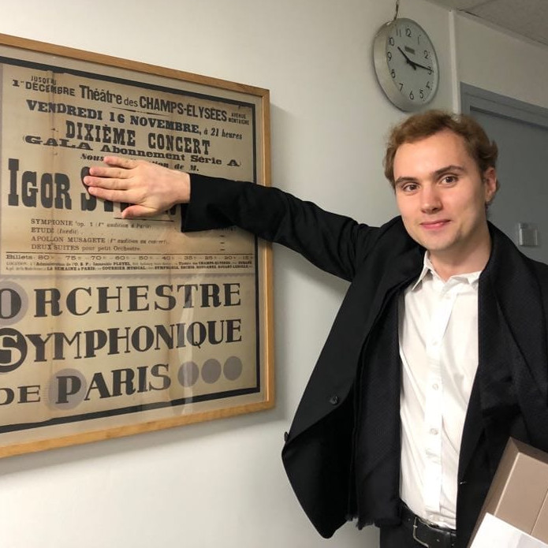
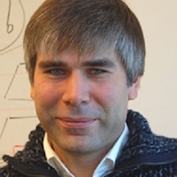

Learning joint reconstruction of hands and manipulated objects
People
 Yana Hasson |
 Gül Varol |
Dimitrios Tzionas |
 Igor Khalevatykh |
Michael J. Black |
 Ivan Laptev |
Cordelia Schmid |
Abstract
Estimating hand-object manipulations is essential for interpreting and imitating human actions. Previous work has made significant progress towards reconstruction of hand poses and object shapes in isolation. Yet, reconstructing hands and objects during manipulation is a more challenging task due to significant occlusions of both the hand and object. While presenting challenges, manipulations may also simplify the problem since the physics of contact restricts the space of valid hand-object configurations. For example, during manipulation, the hand and object should be in contact but not interpenetrate. In this work, we regularize the joint reconstruction of hands and objects with manipulation constraints. We present an end-to-end learnable model that exploits a novel contact loss that favors physically plausible hand-object constellations. Our approach improves grasp quality metrics over baselines, using RGB images as input. To train and evaluate the model, we also propose a new large-scale synthetic dataset, ObMan, with hand-object manipulations. We demonstrate the transferability of ObMan-trained models to real data.
Paper, data and code
BibTeX
@INPROCEEDINGS{hasson19_obman,
title = {Learning joint reconstruction of hands and manipulated objects},
author = {Hasson, Yana and Varol, G{\"u}l and Tzionas, Dimitrios and Kalevatykh, Igor and Black, Michael J. and Laptev, Ivan and Schmid, Cordelia},
booktitle = {CVPR},
year = {2019}
}
Video
Acknowledgements
This work was supported in part by ERC grants ACTIVIA and ALLEGRO, the MSR-Inria joint lab, the Louis Vuitton ENS Chair on AI and the DGA project DRAAF. MJB has received research gift funds from Intel, Nvidia, Adobe, Facebook, and Amazon.
We thank Tsvetelina Alexiadis, Jorge Marquez and Senya Polikovsky from MPI for help with scan acquisition, Joachim Tesch for the hand-object rendering, Mathieu Aubry and Thibault Groueix for advices on AtlasNet, David Fouhey for feedback.
Copyright Notice
The documents contained in these directories are included by the contributing authors as a means to ensure timely dissemination of scholarly and technical work on a non-commercial basis. Copyright and all rights therein are maintained by the authors or by other copyright holders, notwithstanding that they have offered their works here electronically. It is understood that all persons copying this information will adhere to the terms and constraints invoked by each author's copyright.